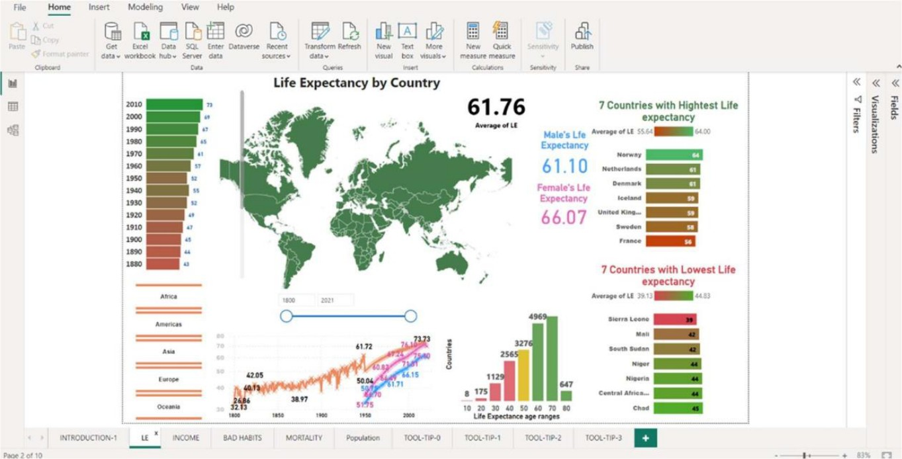
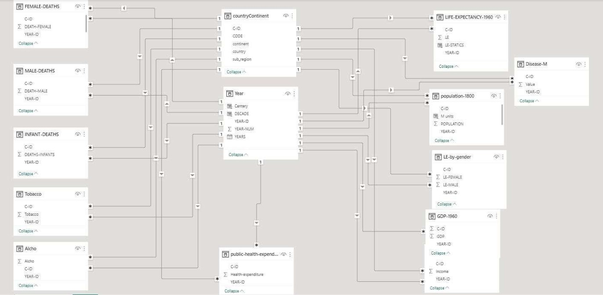
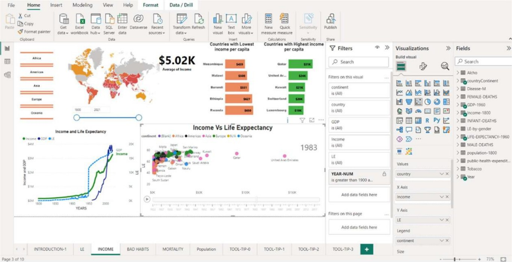
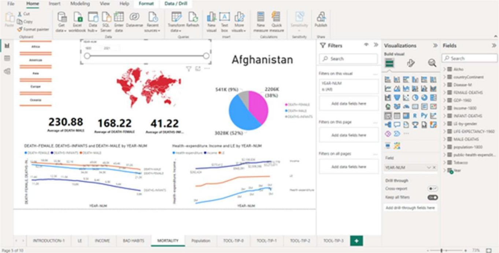
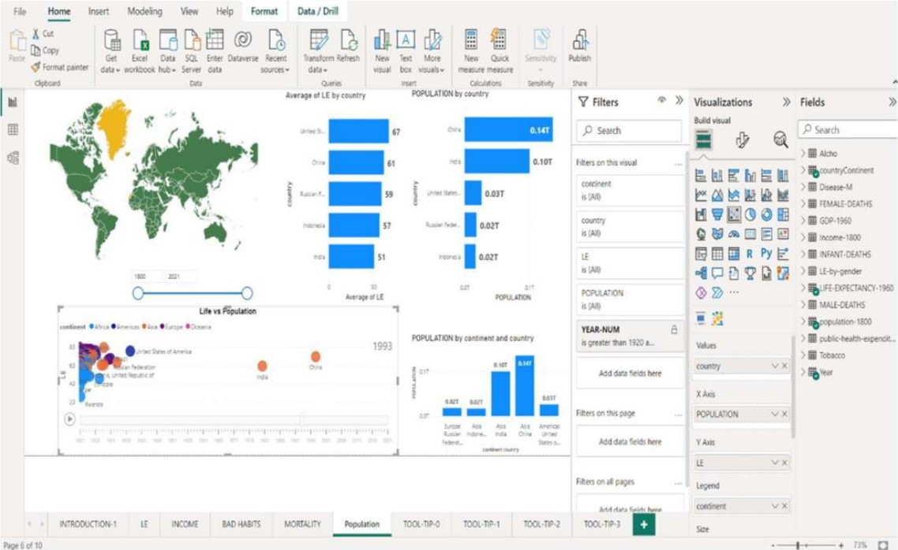
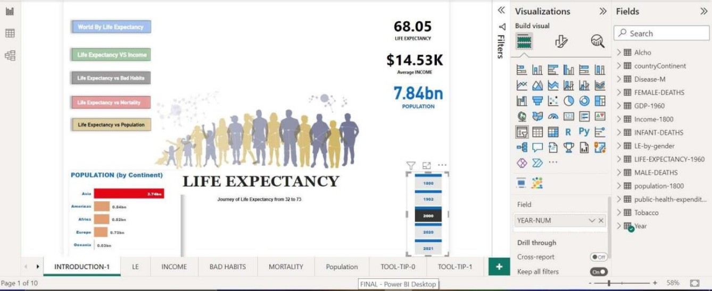
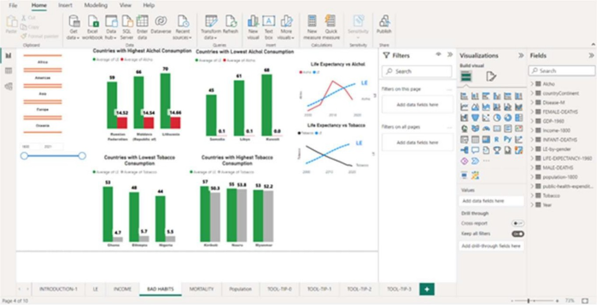

Global Life Expectancy Analysis
Research overview
Research objective
Explore global life expectancy between 1800 and 2020 and associated demographic, health and economic indicators.
Methodology
The report uses World Bank and Our World in Data sources, data cleaning, relational modelling, fact and dimension tables, DAX and M, and interactive Power BI dashboards.
Results and interpretation
The report describes an increase in life expectancy from 32 to 73 years across the studied period and explores differences by region, income, mortality and lifestyle. These descriptive associations do not establish causality.
Research visualisations














Read the full business intelligence report
Original academic document · 55 pages · personal student identifiers removed where found.
Open full PDF in new tab Download PDF
If your browser cannot display the embedded PDF, use the open or download link above.
Source code and project files
Explore the original implementation and available project materials in the GitHub repository.
View project on GitHub ↗